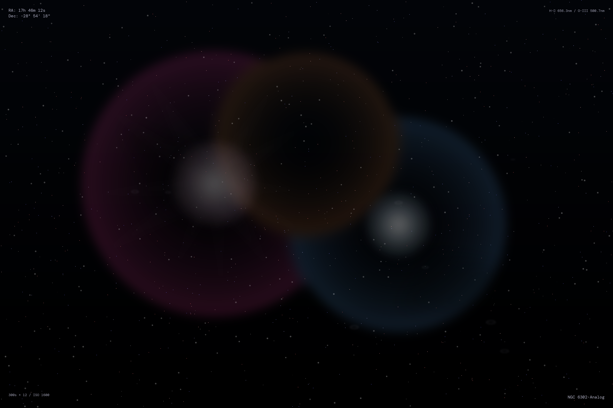

About
This piece employs multi-layer volumetric rendering to capture the sublime beauty of cosmic phenomena. Nebula clouds glow with astrophysically accurate emission spectra—hydrogen-alpha magentas, oxygen-III cyans, and sulfur oranges—while volumetric light rays suggest atmospheric scattering across vast distances.
The work stratifies multiple depth planes: foreground particles catching light, mid-ground nebulosity with luminous cores, background star fields at varying intensities, and distant elliptical galaxies. Dark dust lanes carved through the composition create sculptural contrast against the luminous regions.
Resolution
3600×2400px / 300 DPI
Technique
Layered volumetric rendering
Philosophy
Volumetric Sublime
Reference
NGC 6302 analog structure
Design Philosophy: Volumetric Sublime / 2025